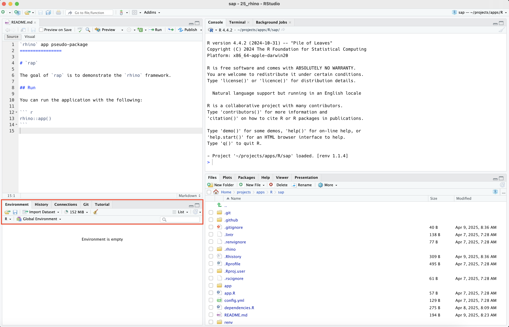

The branch in this chapter is slightly different than the previous golem and leprechaun branches, because instead of loading, documenting, and installing rap, we’re going to re-initialize the IDE by selecting Session > Terminate R…
(a) Re-initialize the IDE
Figure 17.1: On the fw_rap branch, re-initialize the IDE (instead of loading, documenting, and installing)
When the IDE re-opens, we see the rap files and notice the Build pane has been removed:

(a) rhino app IDE
Figure 17.2: Notice the Build pane has been removed from the fw_rap branch
The Build pane is deactivated because rhino applications aren’t R packages.1
Launch the application in rap by opening the app.R file and clicking Run App (or by passing rhino::app() into the Console).
As we can see, most of the standard R package folders and files are missing from rap, because rhino applications use the box package for importing dependencies and organizing code.2
17.2rhino features
The rhino website explains the philosophy behind the application structure above, so I won’t repeat that information here. However, I highly recommend reading the available documentation on rhino and box before deciding to adopt this framework.3
17.3box modules
A box module (not to be confused with a Shiny module) is a collection of .R scripts in a folder. The modules in a new rhino app are stored in the app/logic/ and app/view/ folders:
Note that the tidyverse_logo() function is still not loaded outside the logo module
tidyverse_logo()
Error in tidyverse_logo(): could not find function "tidyverse_logo"
By explicitly naming the functions you intend to use with box::use(package[function]), box modules remove the need install and load packages with install.packages() and library().5
17.4 Tests
rhino apps have support for testing with testthat, shiny::testServer(), shinytest2, and Cypress.
Below is the boilerplate test code in the tests/testthat/test-main.R file:
box::use( shiny[testServer], testthat[...],)box::use( app/main[...],)test_that("main server works", {testServer(server, {expect_equal(output$message, "Hello!") })})
1
box module importing test package functions
2
Using shiny::testServer() and testthat::test_that() functions in test.
17.5rhino dependencies
In rhino apps, dependencies are managed by renv and the dependencies.R file. The renv package is designed to,
“create[s] and manage[s] project-local R libraries, save[s] the state of these libraries to a ‘lockfile’, and later restore[s] the library as required.”6
The rhino::pkg_install() helper function updates both the dependencies.R file and renv library. Using dependencies.R, renv, and box modules removes the need to manage dependencies in a DESCRIPTION or NAMESPACE file.7
17.6 Recap
rhino takes a novel and innovative approach to developing Shiny applications (and covering all the ways they differ from app-packages is beyond the scope of this book). Feel free to review the code in the fw_rap branch for a better understanding of how the box modules are structured and used within the ui and server.
The rhino framework isn’t used as widey golem,8 but it’s been gaining popularity (and has been used in a recent pilot FDA submission).
(a) rhino CRAN downloads
Figure 17.4: CRAN downloads for rhino, leprechaun, and goelm between 2020-10-31 and 2023-10-31.
I re-initialize the session on the fw_rap branch so I’m not tempted to load, document, install, or test the code using the IDE.↩︎
Imported dependencies in rhino apps use box modules instead of the DESCRIPTION and NAMESPACE.↩︎
 The
The